Σάββατο 17 Οκτωβρίου · 16:00; · Δημοτικό γήπεδο Γαλαξειδίου
Οιάνθη – Απόλλων Ευπαλίου
Διαιτητές
- Διαιτητής
- ;
- 1ος βοηθός
- ;
- 2ος βοηθός
- ;
- Παρατηρητής
- ;
Οι διαιτητές ανακοινώνονται από την ομάδα πριν τον αγώνα.
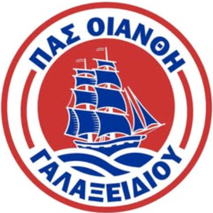
Γαλαξείδι · Φωκίδα
Η ποδοσφαιρική ομάδα του Γαλαξειδίου. Από τα γήπεδα της Β΄ κατηγορίας του '90 ως την άνοδο του 2026, με παίκτες που μεγάλωσαν στον τόπο.
Το όνομα
Οιάνθη λέγανε τα παλιά χρόνια το Γαλαξείδι, και στο σήμα της ομάδας είναι το καράβι με τα πανιά, για την ιστορία του τόπου στη θάλασσα. Το όνομα το κράτησε η πόλη για ό,τι αγαπούσε: από το 1930 έβγαινε εδώ και εφημερίδα με το ίδιο όνομα, για τα τοπικά θέματα και τα γράμματα.
Τα πρώτα της χρώματα ήταν το κόκκινο και το άσπρο. Τα πρώτα χρόνια παίζαμε στο γήπεδο της Ιτέας, που σήμερα δεν υπάρχει πια.
Ιστορία
Πρώτα χρώματα: κόκκινο και άσπρο. Οι αγώνες γίνονται στο γήπεδο της Ιτέας, που σήμερα δεν υπάρχει.
Πρωταθλήτρια σε έναν από τους δύο ομίλους της Β΄ κατηγορίας Φωκίδας.
Στον τελικό του Κυπέλλου Φωκίδας. Ήττα 0–2 από τον Φωκικό Άμφισσας.
Τα χρόνια της Β΄ κατηγορίας. Ιστορίες και φωτογραφίες από παίκτες εκείνης της εποχής.
Πρωταθλήτρια Γ΄ κατηγορίας.
Πρωταθλήτρια Β΄ Φωκίδας, με τον τίτλο κλειδωμένο τρεις αγωνιστικές πριν το τέλος των play-off. Στον τελικό του Κυπέλλου, 1–1 με τον Αμφισσαϊκό και ήττα 3–4 στα πέναλτι.
9η θέση στην Α΄ κατηγορία.
Ξανά πρωταθλήτρια Β΄ Φωκίδας και άνοδος στην Α΄. Στο Κύπελλο, 4–1 τον Αστέρα Ιτέας στο δημοτικό γήπεδο.
Νεοφώτιστη στην Α΄ κατηγορία ΕΠΣ Φωκίδας.
Χρονιές
Μία ομαδική φωτογραφία για κάθε χρονιά που βρίσκουμε. Αν έχετε κάποια στο συρτάρι, στείλτε τη μαζί με τη χρονιά.
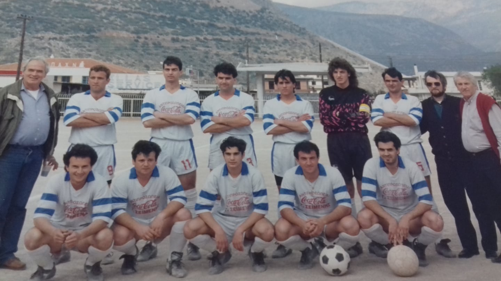
Όρθιοι (από αριστερά): Βασίλης Στατζούρης, Χαράλαμπος Λυμπέρης, Βασίλης Συριόπουλος, Ηλίας Καλύβας, Γιάννης Μπούρδης, Χάρης Κωστάκος, Λάμπρος Μπαρτσώτας, Δρόσος Αγγουράς (πρόεδρος), Ηλίας Χαλδεάκης.
Καθιστοί (από αριστερά): Ηρακλής Χαρδαλούπας, Γιώργος Ιακωβόπουλος, Νίκος Τσούνης, Γιώργος Γιαγκιλίτσης, Γιάννης Καρδαράς.
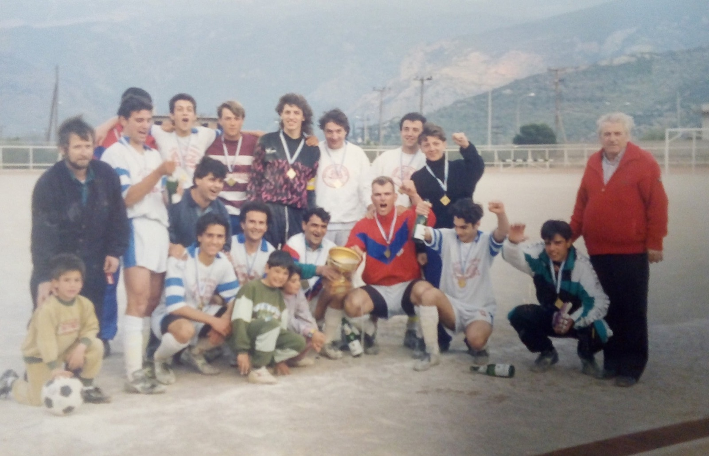
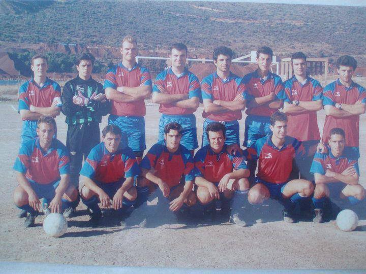
Όρθιοι (από αριστερά): Γιάννης Πολύζος, Λουκάς Μπούρδης, Κώστας Τσώνος, Θανάσης Παρασκευάς, Νικόλαος Μπιλέρης, Κώστας Αναγνός, Ηρακλής Τουρνατζής, Μαγκλάρας.
Καθιστοί (από αριστερά): Χαράλαμπος Λυμπέρης, Λάμπρος Μπαρτσώτας (προπονητής), Νικόλαος Τσούνης, Γεώργιος Ιακωβόπουλος, Βασίλης Συριόπουλος, Γιάννης Μπούρδης.
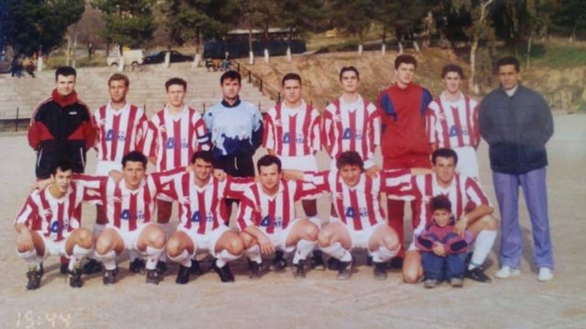
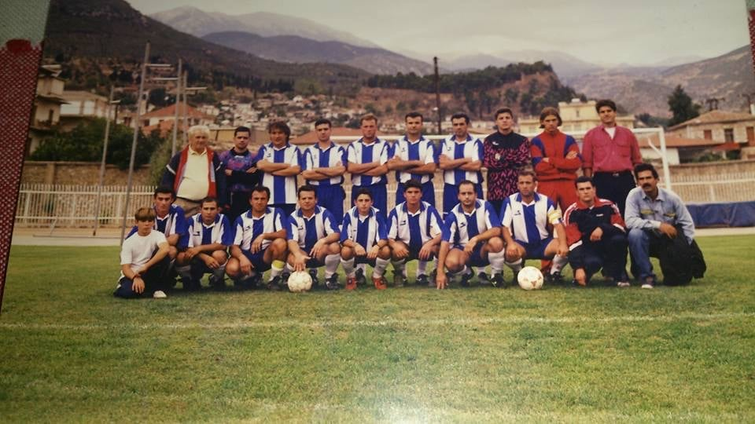
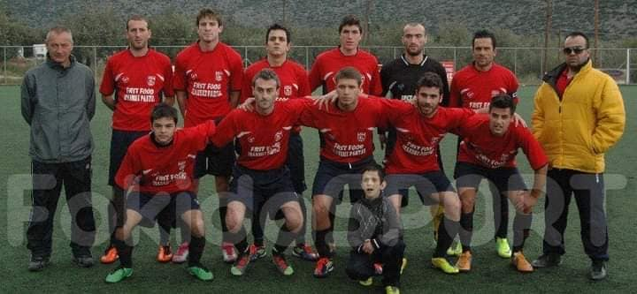
2026–27
Προπονητής: Κωνσταντίνος Λίβας · Βοηθός προπονητή: Γιάννης Μαρδάκης
| # | Όνομα | Θέση | Πόδι |
|---|---|---|---|
| — | Μικρό όνομα | Αμυντικός | Δ |
| — | Μικρό όνομα | Μέσος | Α |
| — | Μικρό όνομα | Επιθετικός | Δ |
Για τα παιδιά δεν δημοσιεύονται φωτογραφίες. Μόνο όνομα, θέση και πόδι, με τη συγκατάθεση των γονιών.
Δ δεξί · Α αριστερό · Α/Δ και τα δύο
Α΄ Φωκίδας · 4η αγωνιστική
Σάββατο 17 Οκτωβρίου · 16:00; · Δημοτικό γήπεδο Γαλαξειδίου
Οιάνθη – Απόλλων Ευπαλίου
Οι διαιτητές ανακοινώνονται από την ομάδα πριν τον αγώνα.
Πρόγραμμα: starsports.gr, 11/10/2026.
Α΄ Φωκίδας 2026–27
Πρόγραμμα: αφίσα της ομάδας «Αγωνιστικό πρόγραμμα 2026–2027, 1ος γύρος».
| # | Ομάδα | Β |
|---|---|---|
| 1 | Ανδρούτσος Γραβιάς | 7 |
| 2 | Απόλλων Ευπαλίου | 6* |
| 3 | Ησαΐας Δεσφίνας | 4* |
| 4 | Γλυφάδα | 4 |
| 5 | Ακαδ. Ποδ. Ιτέας | 3* |
| 6 | Οιάνθη Γαλαξειδίου | 3 |
| 7 | Αστέρας Ιτέας | 1* |
| 8 | Ακαδημία '94 | 0 |
Μαζί με το Γλυφάδα – Αστέρας Ιτέας 0–0 (11/10). Οι αστερίσκοι όπως στην πηγή (πιθανώς ομάδες με λιγότερους αγώνες). Πηγή: starsports.gr, 11/10/2026.
Η βαθμολογία ενημερώνεται στο starsports.gr και στην ΕΠΣ Φωκίδας.
Στηρίζουν την Οιάνθη
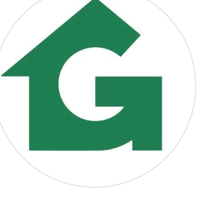
Ανακαινίσεις, αναπαλαιώσεις κατοικιών και real estate · Γαλαξείδι
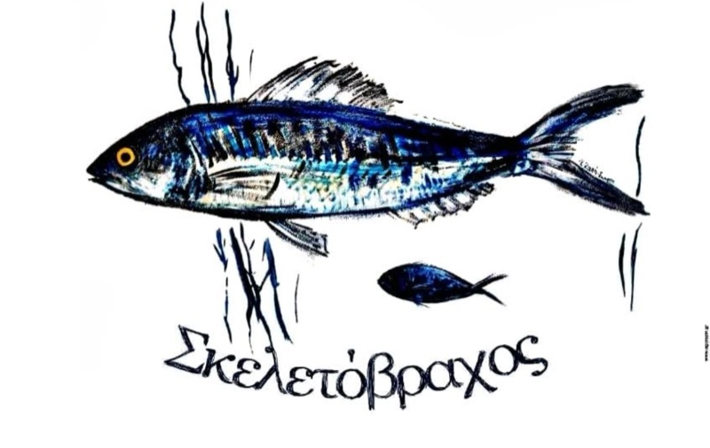
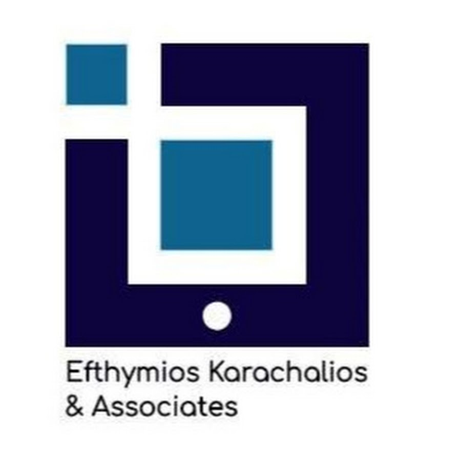
Λογιστικό – φοροτεχνικό γραφείο · Αγίου Νικολάου 36, Ιτέα
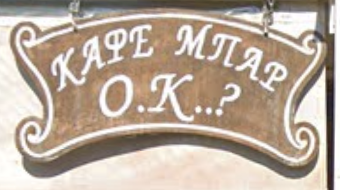
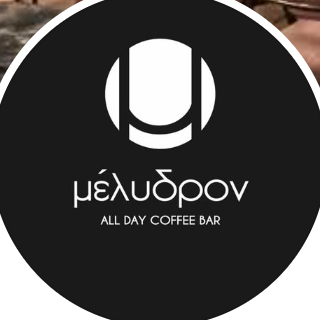
Ήχος και φωτισμός · οργάνωση γάμων και συναυλιών
τηλέφωνο
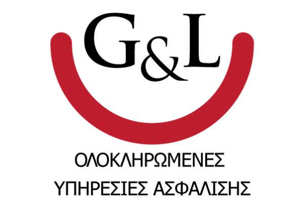
Μεσιτικό γραφείο · ακίνητα και στο Γαλαξείδι
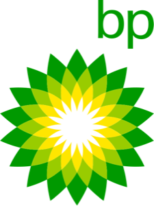
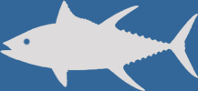
Είδη αλιείας και ναυτιλίας, μηχανές Yamaha · στο λιμάνι, Γαλαξείδι
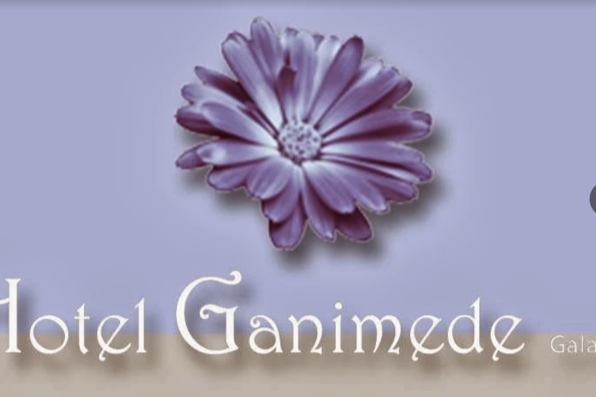
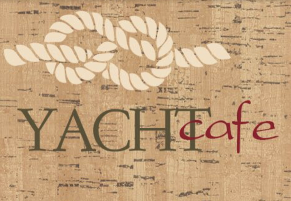
Βοηθήστε μας
Ομαδικές, από αγώνες, από τα αποδυτήρια. Στείλτε τη με τη χρονιά και, αν θυμάστε, τα ονόματα. Μπαίνει στη χρονιά της.
Η ομάδα στο Facebook